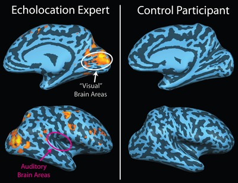
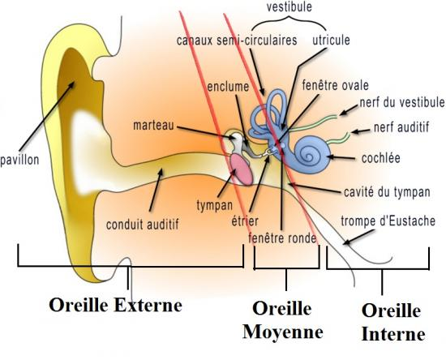

L'écholocalisation et les humains

L’écholocalisation humaine est la capacité des humains de détecter des objets dans leur environnement au travers d'échos reçus de ces objets. Cette capacité est utilisée par certains aveugles pour se déplacer dans leur environnement.
L'écholocation humaine est similaire dans son principe au sonar actif et à l'écholocalisation animale employée par certains animaux comme les chauves-souris ou les dauphins.
1) émission d'un son
L'écholocalisation étant à base de son, les aveugles sont obligés d'en produire. Contrairement aux chauve souris, La fréquence du son émis est sans grande importance. Les sons sont produits de différentes manières : en frappant le sol avec le pied ou leur canne, en claquant leur langue sur leur palet (clic palatal).Une étude révèle que les clics utilisés pour l'écholocalisation humaine sont des signaux à bande large (large spectre d'émission), dont la fréquence varie d'un individu à l'autre, mais également chez un même individu.
2) Réfléxion
Tout comme les chauves-souris, les humains utilisent le principe de l'écho : lorsque le son émis leur revient, celui-ci peu leur apporter une multitude d'informations : moins performant que les chauves-souris, le système d'écholocalisation des aveugles leur permet tout de même d'obtenir des informations détaillées sur l'emplacement des obstacles (où se trouvent les objets), leur dimension (leur taille et leur forme générale) et leur densité (leur solidité). Pour determiner l'emplacement d'un objet, l'aveugle doit être capable d'en estimer la distance et la direction (gauche/droite, avant/arrière, haut/bas). La dimension se réfère à la hauteur de l'objet (grand ou petit) et à sa largeur (large ou étroite).
3) Réception de l'onde
Bien evidemment, les sons sont receptionnés par l'oreille : lorsque que les vibrations dues au son arrivent dans l'oreille interne, celles-ci font bouger
La cochlée. C'est un organe creux rempli d'un liquide appelé endolymphe. Elle est tapissée de cellules ciliées - des cellules sensorielles non renouvelables coiffées de structures filamenteuses, les stéréocils. Ces cellules sont disposées le long d'une membrane (la membrane basilaire) qui vient partitionner la cochlée en deux chambres. L'ensemble des cellules ciliées et des membranes qui leur sont adjointes constitue l'organe de Corti.
La membrane basilaire et les cellules ciliées qu'elle porte sont mises en mouvement par les vibrations transmises au travers de l'oreille médiane. Le long de la cochlée, chaque cellule répond préférentiellement à une certaine fréquence, pour permettre au cerveau de différencier la hauteur des sons. Ainsi, les cellules ciliées les plus proches de la base de la cochlée (fenêtre ovale, au plus près de l'oreille médiane) répondent préférentiellement aux aigus. Celles situées en son apex (dernier tour de la cochlée) répondent au contraire aux basses fréquences.
Ce sont les cellules ciliées qui font la transduction (processus qui à l'aide d'évènements moléculaires permet de transférer un signal physique ou chimique à travers une cellule) mécanoélectrique. Elles transforment un mouvement de leurs cils en signal nerveux par le nerf auditif, qui va être interprété par le cerveau comme un son de la hauteur tonale correspondant au groupe de cellules excitées. Tout comme la chauve-souris, la fréquence du son reçu permet (par effet doppler) de savoir si l'objet est immobile en mouvement...
De plus, les aveugles sont rendus plus performants dans l'exercice de l'écholocalisation par la plasticité cérébrale : des IRMS ont montré que le cortex visuel inutile des aveugles est reconvertie dans le traitement des infos auditives : ils sont plus precis et plus rapides dans l'utilisation de l'écholocation. ils peuvent percevoir la provenances d'un son a 3° pres.